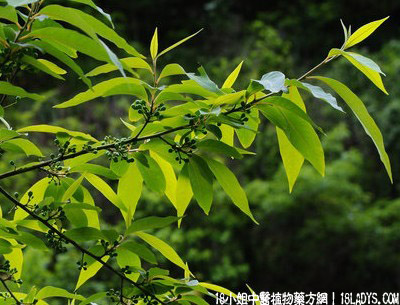

别名：过山香、满山香、毕澄茄子根、山苍根、毕澄茄。
植物名：山鸡椒。
生长环境：本品为常绿灌木或小乔木、生于郁林、山谷至山腰荒山，分布极广，而以温暖、湿润、土壤肥沃并发性的山地灌木丛、草地及郁林为普遍。
分布：长江以南各省均有分布，广东及海南各地均产。
入药部分：根、茎。
采集期：全年。
采购地点：从药材公司购入。
性味：性温、味辛、气香。
功能：祛风散寒、消肿、止痛。
主治、用量和用法：1、风肿、水肿：干用1至2两，清水煎服。另用适量煎洗；2、风湿痹痛：干用1至2两，加鸡或猪脚筋煎服；3、筋骨无力；4、湿脚气；5、产后脚软，以上三项均干用1至2两，加鸡脚或猪脚筋煎服；6、产后口渴：干用1两、黑枣4枚，煎作茶服；7、跌打：干用1两，浸酒1斤，浸一月可用，适量内服。
验方：（治风湿软脚痛方）豆豉羌1两、半枫荷5钱、千斤拔5钱、臭屎茉莉头5钱、清水4碗煎成一碗服，或加鸡脚同煎。
（方解）豆豉羌、半枫荷祛风祛湿，为君臣之制，佐以千斤拔行气活血，臭屎茉莉玄入下焦而去风寒湿邪为使，立法精简，攻补兼施，恰到病所。
（方歌）风湿脚软步蹉跎，豆豉羌与半枫荷，臭茉莉头千斤拔，祛风去湿起沉疴。
参考资料：《广州常用草药验方集解》治疗浮肿验方：黑老虎2两、豆豉羌2两、红枣1两、清水4碗，煎成一碗温服。
（方解）豆豉羌即毕澄茄根，气味辛燥、具有祛风去湿消肿作用、对手足肿痛，痹痛，痰湿脚气，有一定疗效。黑老虎辛燥祛风散瘀，疗风痰湿肿、产后恶露不清，疗效很高。佐以红枣以甘以制辛，调补血分。因此，有补血 燥湿祛风消肿之效。
（方歌）治疗浮肿有验方，祛风祛湿豆豉羌，黑虎力能疗风肿，调入枣儿血自安。